Модульные дома и бани с собственного производства в Петербурге.
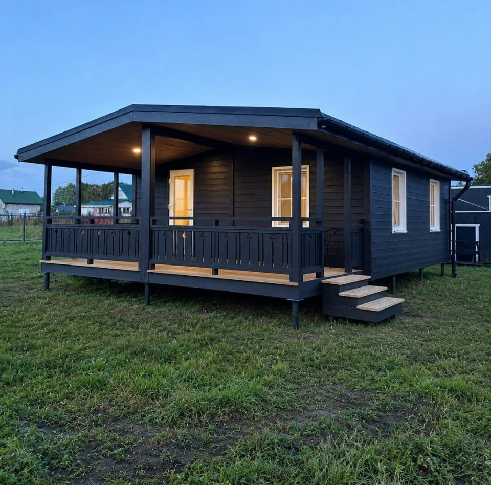
Чёрный снаружи, белый внутри
- Размер
- 6×8,5 м: дом 6×6 и терраса 2,5×6
- Внутри
- две спальни, кухня-гостиная, печь
- Когда
- сентябрь 2026
Нет слов! Красота. Стиль. Уют.
Елена, комментарий ВКонтакте
Ещё дома за этот год
Все стоят у заказчиков. Нажмите на дом: откроются фото с подписями и план.
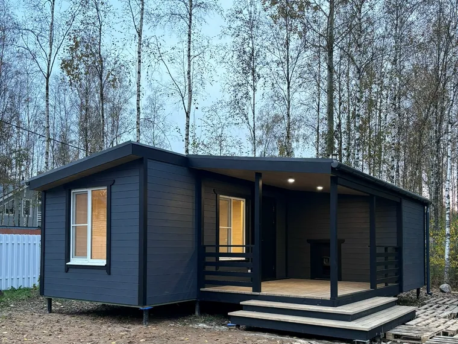
Баня с жилой комнатой
- Размер
- 31,5 м² + терраса 12 м²
- Внутри
- комната, парная, душевая, санузел
- Когда
- октябрь 2026
Фото и план
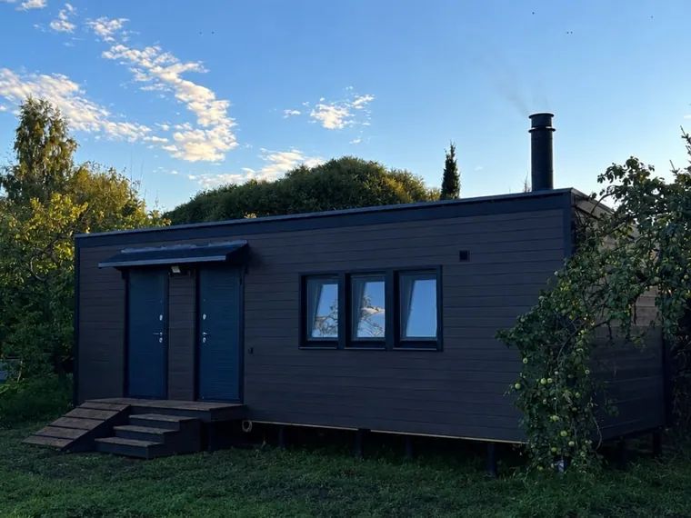
Дачный 3×9 с хозблоком
- Размер
- 3×9 м
- Внутри
- кухня-гостиная, печь, санузел, хозблок
- Когда
- сентябрь 2026
Фото и план
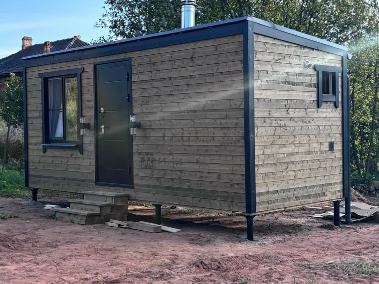
Баня 2,5×6
- Размер
- 2,5×6 м
- Внутри
- комната отдыха, моечная, парная
- Когда
- август 2026
Фото и план
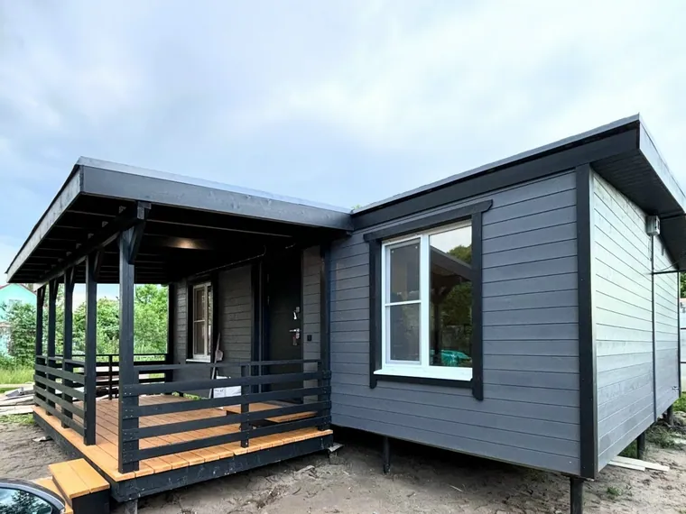
Дом 48 м² с угловой террасой
- Размер
- 48 м² + угловая терраса
- Внутри
- две спальни, гостиная, кухня
- Когда
- август 2026
Фото и план
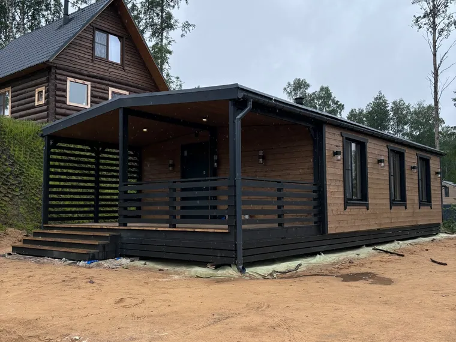
Зимний дом 69 м²
- Размер
- 54 м² + терраса 15 м²
- Внутри
- кухня-гостиная с печью, спальни
- Когда
- июнь 2026
Фото и план
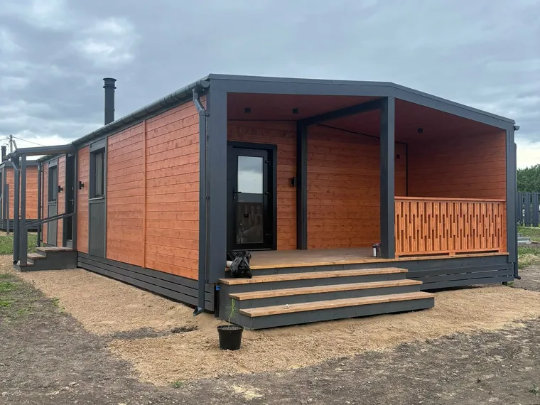
Рыжий дом 69 м²
- Размер
- 54 м² + терраса 15 м²
- Фасад
- рыжее дерево и графит
- Когда
- июнь 2026
Фото и план
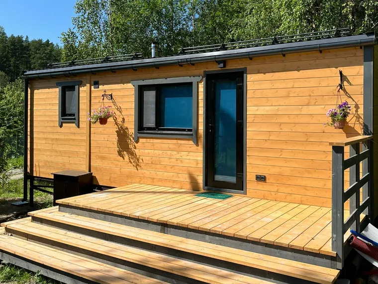
Дом с баней
- Внутри
- кухня-гостиная, спальня, парная
- Фасад
- рыжее дерево, широкая терраса
- Когда
- апрель 2026
Фото и план
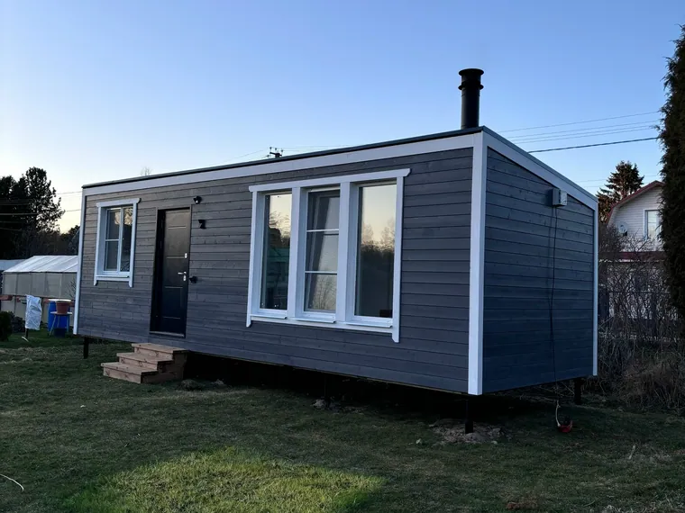
Дом-студия 27 м²
- Размер
- 27 м²
- Внутри
- комната с печью, спальня, санузел
- Когда
- апрель 2026
Фото и план
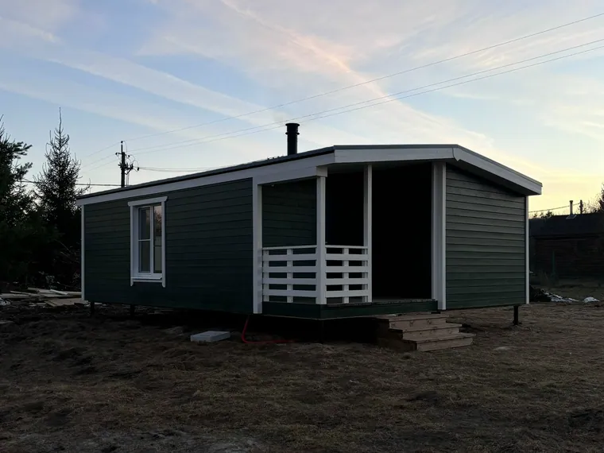
Дом 48 м², зелёный
- Размер
- 48 м² + терраса
- Фасад
- зелёный, белая терраса
- Когда
- март 2026
Фото и план
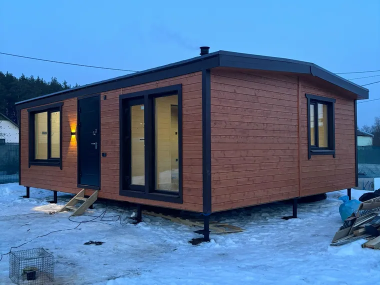
Дом 48 м², рыжий
- Размер
- 48 м², 6×8 м
- Фасад
- рыжее дерево и графит
- Когда
- март 2026
Фото и план
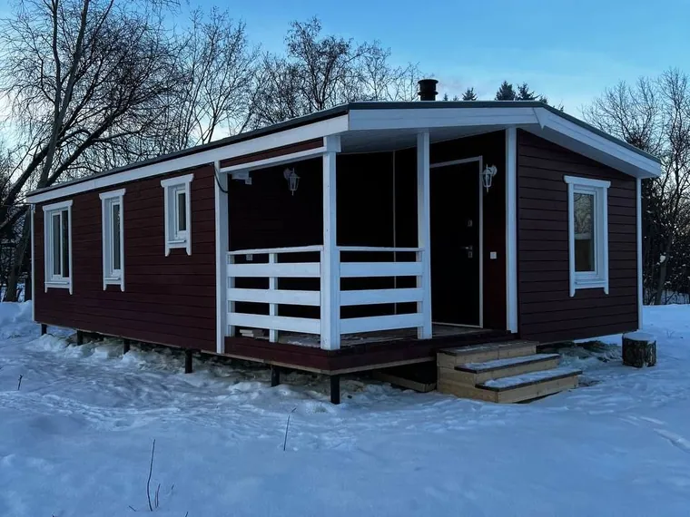
Дом 54 м², бордовый
- Размер
- 54 м² + терраса
- Фасад
- бордовый, белые окна
- Когда
- март 2026
Фото и план
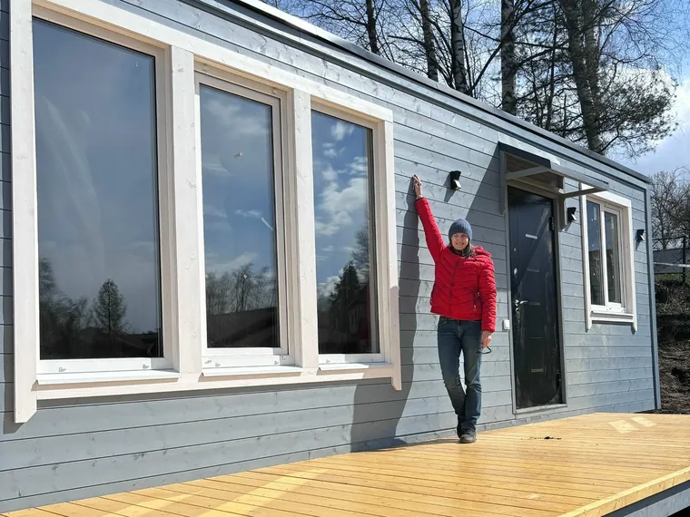
Зимний минидом
- Внутри
- кухня-гостиная, спальня, санузел
- Терраса
- 14 м²
- Когда
- март 2026
Фото и план
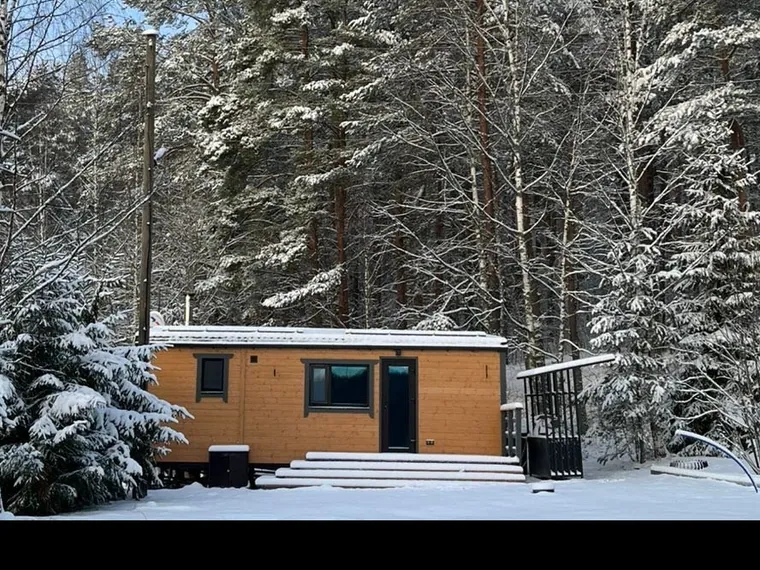
Минидом в Карелии
- Где
- Карелия
- Фото
- от заказчиков
- Когда
- зима 2025
Фото и план
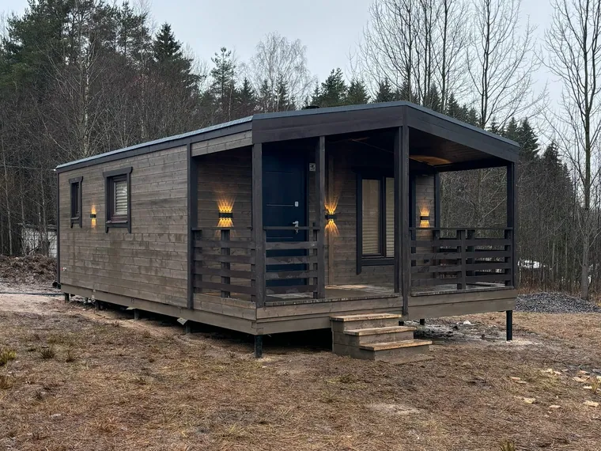
Зимний дом 40 м²
- Размер
- 30 м² + терраса 10 м²
- Срок
- 3 недели, установка 1 день
- Когда
- декабрь 2025
Фото и план
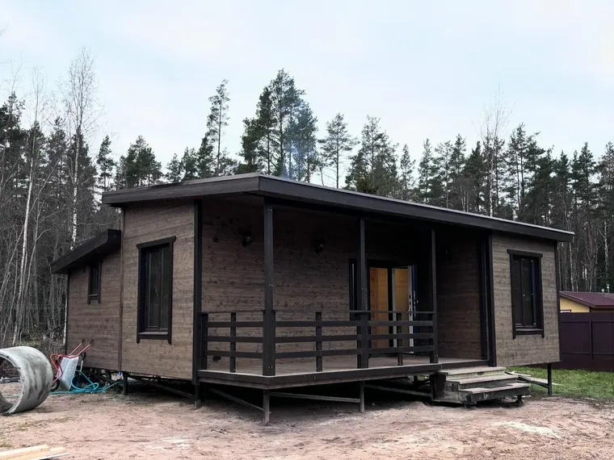
Дом на вырост, 72 м²
- Размер
- 60 м² + терраса 12 м²
- Модули
- три
- Когда
- октябрь 2025
Фото и план
Свою планировку можно собрать в конструкторе.
Что пишут о домах
Заказчики и подписчики, из сообщений и комментариев ВКонтакте за последний год.
«Юля, Юра и всей вашей команде огромное спасибо! …С вами просто замечательно работать! В доме тепло, просторно, светло… Не верится, что один модуль превратился в такую красоту.»
«Какие ваши дома просторные и красивые.»
«А главное — качественный! Как вспомню свой мини-теремок, так вздрогну.»
«Вот оно — тихое семейное счастье и релакс!»
«Сколько можно уместить в таком пространстве, обалдеть!»
Частые вопросы
Коротко о том, что спрашивают чаще всего.
Сколько стоит дом?
Стоимость считаем под ваш дом: она зависит от размера, планировки и отделки. Уточните цену у производителя.
Можно свою планировку?
Да. Планировки придумывают заказчики, мы помогаем доработать и сделать удобнее. Изменить планировку можно бесплатно.
Что входит в «под ключ»?
Чистовая отделка, электрика, разводка и вся сантехника.
Сантехника: трубы открытым монтажом.
Сколько ждать?
Дом или баню делаем от 2 до 5 недель, смотря по размеру. На участке ставим за 1–2 дня.
Можно привезти свою мебель и технику?
Да. Привезите её к нам на производство: она приедет на участок прямо в доме.
Какая высота потолков?
245 см в коньке и 205 см в нижней точке.
Дом 6×9 с террасой
- Контур
- 6×9 м, 54 м² тёплого
- Терраса
- 2,5×9 м, вдоль всего дома
- Рисунок
- из нашего конструктора
Мебель и технику заказчик привёз на производство. Они приехали на участок прямо в доме.
«Сидим на даче, топим печку и вас с благодарностью вспоминаем.»Наталья, заказчица, ВКонтакте
Ваш дом
- Размер
- от 3×6 до 6×9 м
- Планировка
- ваша
- Цвета
- ваши
- Срок
- 4–5 недель + 1–2 дня
Кнопка «Собрать свой дом» внизу откроет конструктор.
Юлия и Юрий · дома. Собственное производство, Санкт-Петербург.